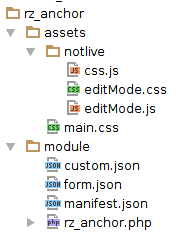

Getting Started¶
What is a Module¶
A module in rukzuk represents either a content component or a style component. Each module content component builds its own desired content and output the result. Whereby a module style component attaches style attributes to a parent module content component and subsequently to its children.
There are three types of modules:
| Type | Description |
|---|---|
| default | Content components like text, image, slider, form, … |
| extension | Modules which can extend other modules, e.g. all style components. |
| root | The root module is responsible for the base HTML skeleton. It is always the first node in the design structure tree and can only be inserted once. |
Basic Example:
1 2 3 4 5 6 7 8 9 10 11 12 13 14 15 16 | <?php
namespace Rukzuk\Modules;
class my_module_text extends SimpleModule
{
/**
* @param $renderApi
* @param \Render\Unit $unit
* @param \Render\ModuleInfo $moduleInfo
*/
public function renderContent($renderApi, $unit, $moduleInfo)
{
echo "<div><span>My Text</span></div>";
$renderApi->renderChildren($unit);
}
}
?>
|
Output Example:
<div id="MUNIT-43a1ee8c-954e-410f-9cfa-fd3758d35c13-MUNIT" class="my_module_text isModule">
<div><span>My Text</span></div>
<!-- Rendered Children -->
<div id="MUNIT-24a3ee8c-954e-410f-9cfa-fd3758d67c48-MUNIT" class="rz_textfield isModule">
<div class="text">
<p> </p>
<h2>THE TRIANGLE CHALLENGE<br>17.5.2014</h2>
</div>
</div>
</div>
Note
You can override modules if you name your new customized module with the origin module name. When you remove your derived module, the original module will come into play again.
What is a Unit¶
A unit represents a module which is inserted into the structure tree of a rukzuk design or page. It provides specific information/data unique to the unit, e.g. the form values of the user interface. Furthermore, a unit references to a module which processes such data from the unit.
Module Directory Structure¶
The module folder name must be identical to the module ID. Furthermore, every module has a specific directory structure.
Explaining the files in the above screen-shot
| File | Description |
|---|---|
| rz_anchor.php | Main file containing the PHP class. The file name must be identical to the module ID. |
| manifest.json | Holds module relevant information such as module type, name, description, category, version etc. This file can be modified with the built-in user interface builder. |
| form.json | This file has all the form information to build the module user interface. This file can be generated with the built-in user interface builder. |
| custom.json | Specifying JavaScript and CSS files required by the module. You can differentiate between edit and live mode. |
| main.css | Contains static CSS used for the module style. |
| editMode.js | Allows further intervention in edit mode with custom behaviors. |
| editMode.css | Contains static CSS used for the edit mode. |
| css.js | Logic for dynamic CSS generation based on the unit form values. |
Note
All folders named “notlive” are not going to be published to a live environment.
Prerequisites¶
It is recommended to program your module against PHP version 5.4
FTP client to upload your module into your rukzuk space
- To endorse best development experience, it is advised to set-up your development environment to synchronize your development work via FTP.
- alternatively you can use the module import facility which allows to import modules as ZIP files
Module API stubs (API interface reference)
Warning
This documentation corresponds to the module API version 1.1 and above. There is no backwards compatibility to older versions. Although existing modules made with an older version of the module API will continue to work.
Render¶
The render is responsible for going through a node tree containing units and its module to tell them to process and output their content.
TODO
Module API’s¶
SimpleModule Helper¶
The default root module “rz_root” comes with some wrappers to simplify the module development. For example it provides the class SimpleModule which is inherited by all default modules. It also has some convenient helpers for e.g. dynamic CSS generation, responsive images or HTML tag building.
TODO
PHP API’s¶
-
- access parent(s) and child(ren)
- access to other API’s such as CSS API, Head API
Unit API
- get unit data information
ModuleInfo API
- provides information about the module used in the current unit
Note
All above API’s are available in ‘edit’ & ‘live’ render mode except for the CSS API which is only available in ‘edit’ mode.